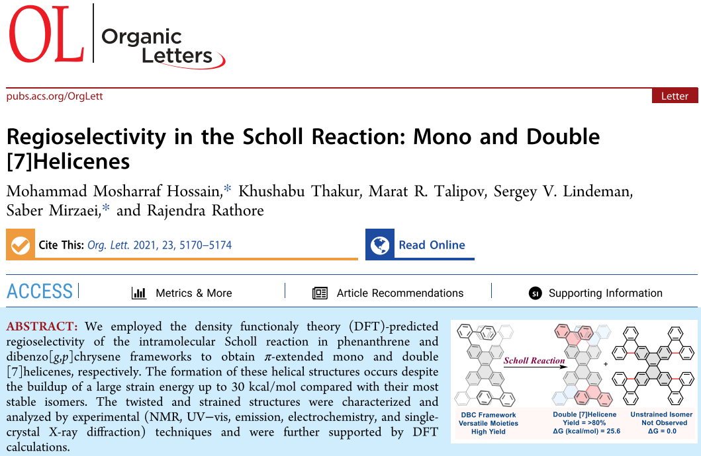
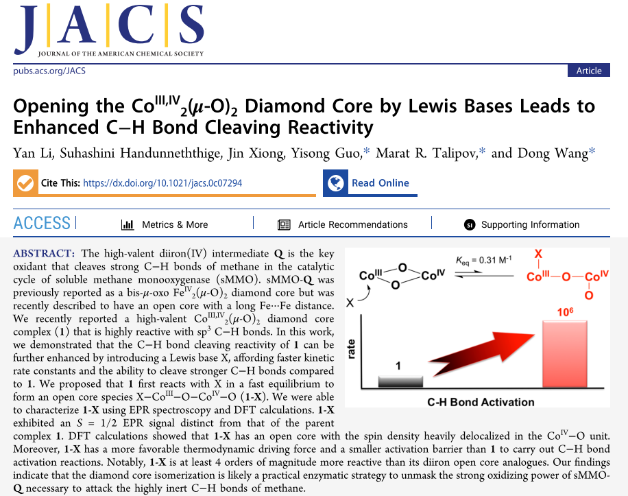
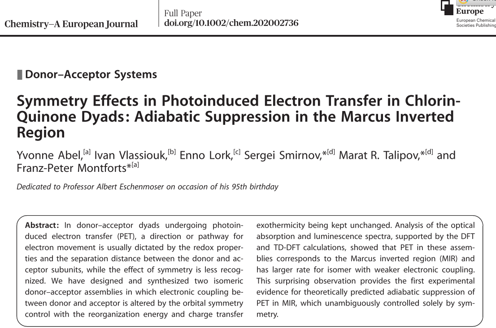
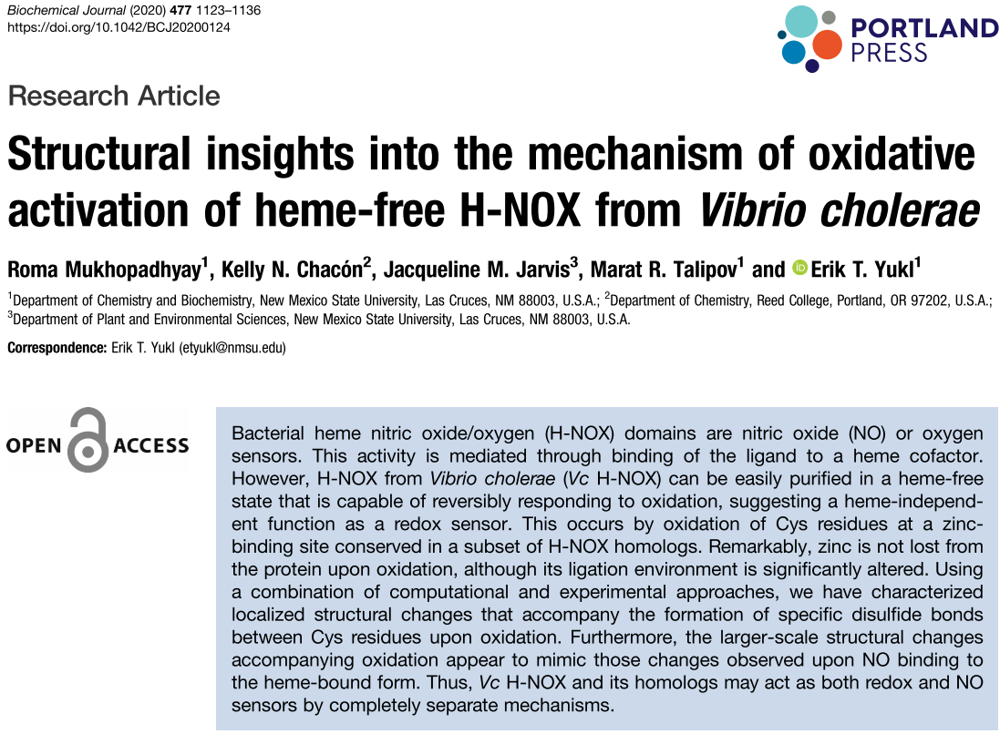
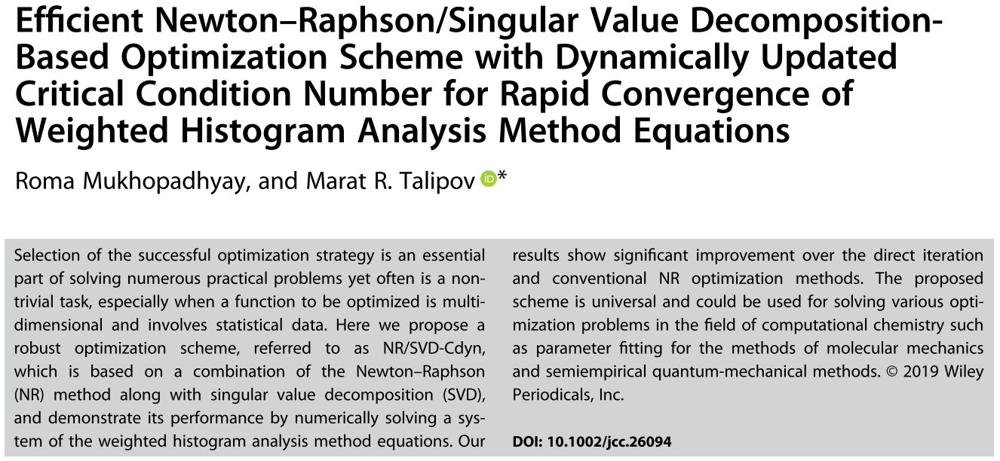
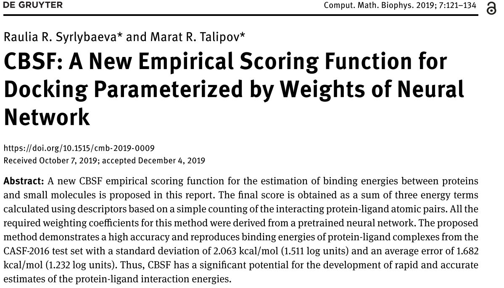
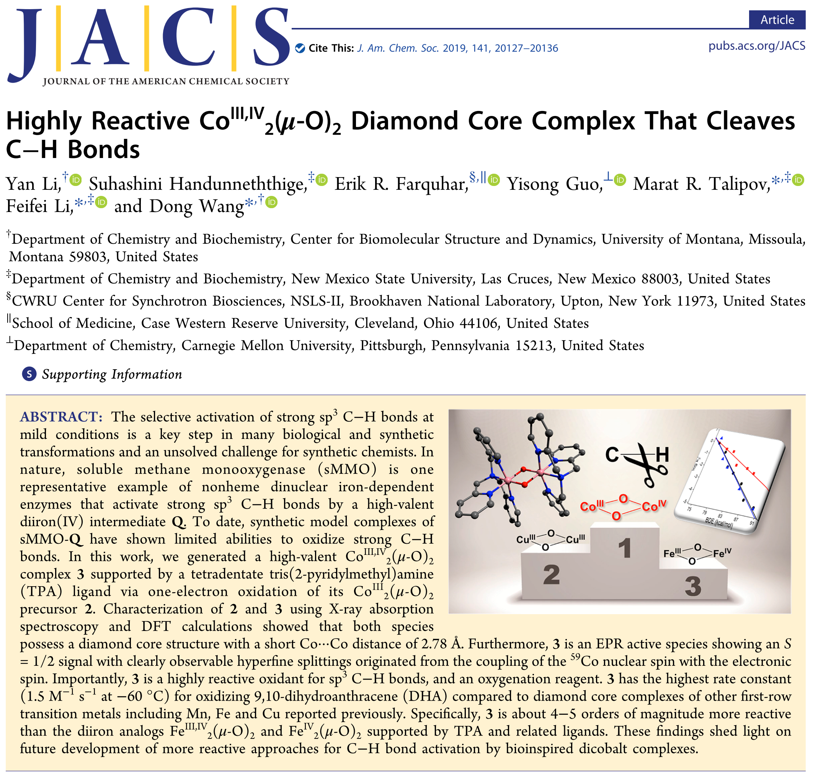
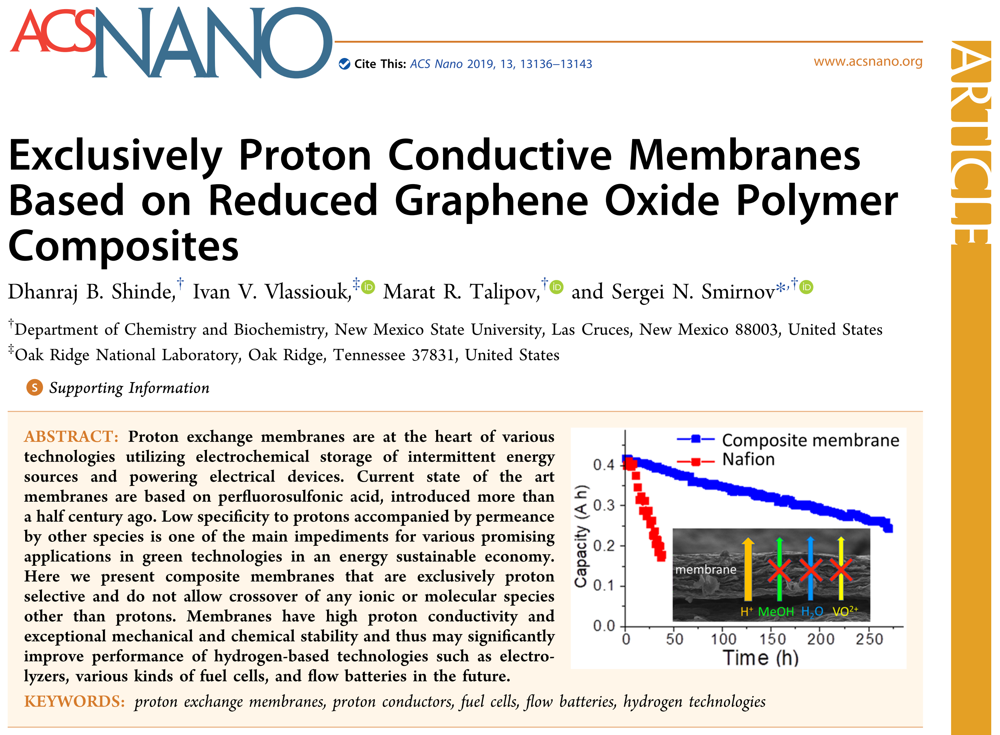

From the original group website
Historical material: this page preserves earlier wording and attributions. Advice may be superseded, data outdated, links unavailable, and events past. Use the current teaching guides for study and planning.
Browse resources · Current teaching guides · Current researchPublications at NMSU
Please feel free to requests the preprints.
- M. Hossain,* K. Thakur, M. R. Talipov, S. Lindeman, S. Mirzaei, R. Rathore “Regioselectivity In the Scholl Reaction: Mono and Double [7]Helicenes”; Org. Lett., 2021, 23 (13), 5170-5174 (DOI 10.1021/acs.orglett.1c01706).


- Y. Li, S. Handunneththige, J. Xiong, Y. Guo*, M. R. Talipov*, D. Wang* “Opening the CoIII,IV2(μ-O)2 Diamond Core by Lewis Bases Leads to Enhanced C–H Bond Cleaving Reactivity”; J. Am. Chem. Soc., 2020, 142 (52), 21670-21678 (DOI 10.1021/jacs.0c07294).


- Y. Abel, I. Vlassiouk, E. Lork, S. Smirnov*, M. R. Talipov*, F.-P. Montforts* “Symmetry Effects in Photoinduced Electron Transfer in Chlorin-Quinone Dyads: Adiabatic Suppression in the Marcus Inverted Region”; Chem.–Eur. J., 2020, 26 (71), 17120-17127 (DOI: 10.1002/chem.202002736).


- R. Mukhopadhyay, K. N. Chacón, J. M. Jarvis, M. R. Talipov, E. T. Yukl* “Structural Insights into the Mechanism of Oxidative Activation of Heme-free H-NOX from Vibrio cholerae”; Biochem. J., 2020, 477 (6), 1123-1136 (DOI: 10.1042/BCJ20200124).


- R. Mukhopadhyay, M. R. Talipov*, “Efficient Newton-Raphson/SVD-based Optimization Scheme with Dynamically Updated Critical Condition Number for Rapid Convergence of WHAM Equations”; J. Comp. Chem., 2020, 41 (3), 240-246 (DOI: 10.1002/jcc.26094).


- R. Syrlybaeva*, M. R. Talipov*, “CBSF: A New Empirical Scoring Function for Docking Parameterized by Weights of Neural Network”, special issue “Development and applications of novel methods in computational biology” of the Computational and Mathematical Biophysics, 2019, 7 (1), 121-134 (DOI: 10.1515/cmb-2019-0009).


- Y. Li , S. Handunneththige , E. R. Farquhar, Y. Guo, M. R. Talipov,* F. Li* and D. Wang* “A Highly Reactive CoIII,IV2(-O)2 Diamond Core Complex that Cleaves C-H Bonds”; J. Am. Chem. Soc., 2019, 141 (51), 20127-20136 (DOI: 10.1021/jacs.9b09531).


- D. B. Shinde, I. V. Vlassiouk, M. R. Talipov, S. N. Smirnov* “Exclusively Proton Conductive Membranes Based on Reduced Graphene Oxide Polymer Composites”; ACS Nano, 2019, 13 (11), 13136-13143 (DOI: 10.1021/acsnano.9b05979).


- M. R. Talipov,* E. Steiner “Coexistence of Structurally Similar but Electronically Distinct Isomers of Delocalized Cation Radicals as a Basis for the Development of Functional Materials”, Phys. Chem. Chem. Phys., 2019, 21, 10738-10743 (DOI: 10.1039/C9CP02271F).

- A. Gupta, J. Brahmbhatt, R. Syrlybaeva, C. Bodnar, N. Bodnar, R. Bongard, P. R. Pokkuluri, D. Sem, R. Ramchandran*, R. Rathore, M. R. Talipov,* “The Role of Conserved Histidine and Serine in the HCXXXXXRS Motif of Human Dual-specificity Phosphatase 5”; J. Chem. Inf. Model., 2019, 2019, 59 (4), 1563-1574. (DOI: 10.1021/acs.jcim.8b00919).

- I. Sevostianov*, M. R. Talipov, “Kröner method for thermal or electrical conductivity of polycrystals and other aggregates of anisotropic particles”; Int. J. Eng. Sci., 2019, 136, 67-77 (DOI: 10.1016/j.ijengsci.2019.02.001).

- R. R. Sapkota, J. M. Jarvis, T. M. Schaub, M. R. Talipov, J. B. Arterburn*, “Bimolecular Cross-Metathesis of a Tetrasubstituted Alkene with Allylic Sulfones”; ChemistryOpen, 2019, 8, 201-205 (DOI: 10.1002/open.201800296).

- R. Bongard, A. Gastonguay, R. Syrlybaeva, M. R. Talipov, R. J. Lipinski, N. Leigh, J. Brahmbhatt, R. Kutty, R. Rathore, R. Ramchandran*, D. Sem*, ”Discovery and Characterization of Halogenated Xanthene Inhibitors of DUSP5 as Potential Photodynamic Therapeutics”; J. Photochem. Photobiol. A: Chem., 2019, 375, 114-131 (DOI: 10.1016/j.jphotochem.2019.01.005).

- S. J. Bailey, R. R. Sapkota, A. E. Golliher, B. Dungan, M. Talipov, F. O. Holguin, W. A. Maio* “Lewis-Acid-Mediated Union of Epoxy-Carvone Diastereomers with Anisole Derivatives: Mechanistic Insight and Application to the Synthesis of Non-Natural CBD Analogues” Org. Lett. 2018 (DOI: 10.1021/acs.orglett.8b01909).

- R. R. Syrlybaeva, M. R. Talipov,* “Ab Initio Study Predicts That Enigmatic Isonitrosyl Fluoride Should Be Stable at Low Temperatures Yet Unnoticeable Due to Its Photoreactivity”; J. Phys. Chem. A, 2018 (DOI: 10.1021/acs.jpca.7b12130).

- F. Li,* M. R. Talipov,* C. Dong, S. Bali, K. Ding “Acid-Facilitated Product Release from a Mo(IV) Center: Relevance to Oxygen Atom Transfer Reactivity of Molybdenum Oxotransferases”; JBIC J. Biol. Inorg. Chem., 2017 (DOI: 10.1007/s00775-017-1518-4).

- R. G. Kutty, M. R. Talipov, R. D. Bongard, R. A. Lipinski, N. L. Sweeney, D. S. Sem,* R. Rathore,* R. Ramchandran* “Dual Specificity Phosphatase 5-Substrate Interaction: A Mechanistic Perspective”; Compr. Physiol., 2017, 7, 1449 (DOI: 10.1002/cphy.c170007).